Обзор
CRYENGINE содержит множество способов преобразования объектов. На этой странице вы прочтете основы использования различных режимов, имеющихся в вашем распоряжении.
Ось Гизмо
Axis Gizmo — это интерфейс для преобразования объектов на сцене. Он имеет ручки для трех осей и плоскостей, а кончики ручек меняют форму в зависимости от выбранного режима. Как это выглядит и что делает, зависит от выбранного режима.
Выберите режим
Режим выбора позволяет выбирать объекты на сцене, не перемещая их случайно.
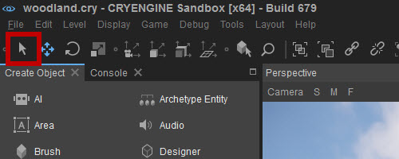
Это можно сделать, просто щелкнув объект, чтобы выбрать только этот конкретный объект, удерживая Ctrl и выберите любое количество отдельных объектов или щелкните и перетащите курсор в окне видового экрана, чтобы создать поле выбора и выбрать каждый объект внутри него.
Режим выбора можно активировать, нажав кнопку на панели инструментов, используя сочетание клавиш '4', или через Редактировать -> Режим редактирования -> Выбрать режим..
В режиме выбора осевой гизмо не имеет ничего на конце каждой оси:
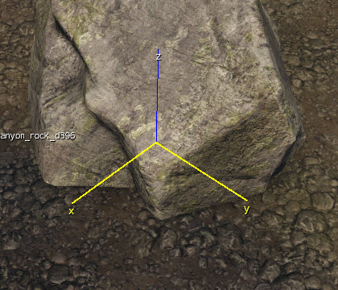
Режим перемещения
Переместить Режим позволяет выбирать объекты и перемещать их по уровню.
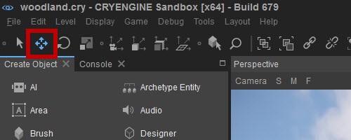
Режим перемещения можно активировать, нажав кнопку на панели инструментов, используя сочетание клавиш '1', или через Редактировать -> Режим редактирования -> Переместить..
В режиме перемещения осевой гизмо имеет стрелку на конце каждой оси.
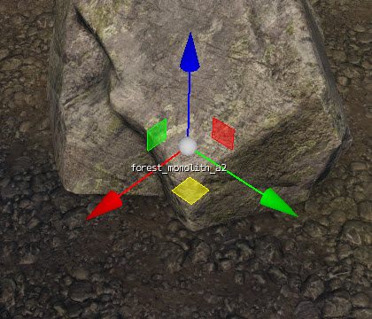
Вы можете щелкнуть и перетащить стрелки, чтобы переместить объект в одном направлении, или вы можете щелкнуть и перетащить одну из плоских штуковин квадратной формы между штуковинами осей, чтобы переместить объект вдоль двух осей одновременно.
Наконец, вы можете щелкнуть и перетащить белую сферу посередине, чтобы перемещать объект по горизонтали и вертикали в пространстве экрана.
Для более точной настройки интерактивного перевода вы можете активировать Привязка к сетке,
Режим поворота
Режим поворота позволяет выбирать объекты и вращать их в интерактивном режиме в окне видового экрана.
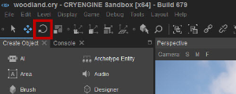
Режим поворота можно активировать, нажав на кнопку, используя сочетание клавиш '2', или через Редактировать -> Режим редактирования -> Повернуть..
В режиме вращения осевой гизмо состоит из нескольких дуг и белого круга:
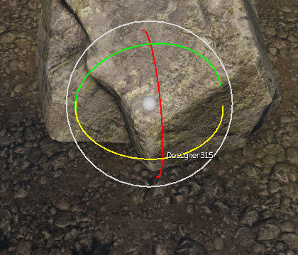
Красное, зеленое и синее колеса соответствуют осям X, Y и Z, а белое колесо всегда будет вращать объект в пространстве экрана.
Белый шар посередине позволяет настроить вращение по двум осям объекта одновременно.
Когда вы используете колесо для поворота объекта, вы также можете просмотреть угол поворота, на который вращается объект:
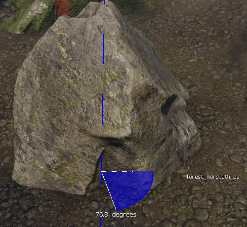
Включив Переключить привязку к углу В окне перспективы вы просматриваете маркеры, что позволяет точно вращать объект.
Изменение взаимодействия вращения
Вы можете выбирать между линейным стилем набора и линейным стилем взаимодействия при взаимодействии с механизмами вращения. Вы можете изменить этот стиль в Редактировать -> Настройки
-> Окно просмотра -> Гизмо -> Гизмо оси -> Взаимодействие для гизмо вращения.
Циферблат
Когда стиль взаимодействия с диском активен, вы поворачиваете объект, вращая курсор мыши вокруг центра гизмо. Расстояние между центром круга и курсором мыши определяет, насколько будет вращаться объект; чем дальше от центра, тем точнее вы сможете повернуть объект.
Черные стрелки покажут вам, где находится курсор мыши.

Линейный
Когда стиль линейного взаимодействия активен, выберите плоскость вращения и перетащите курсор мыши, чтобы повернуть объект. Стрелки на внешней стороне круга указывают направления, в которых можно перетаскивать мышь для оптимального управления.
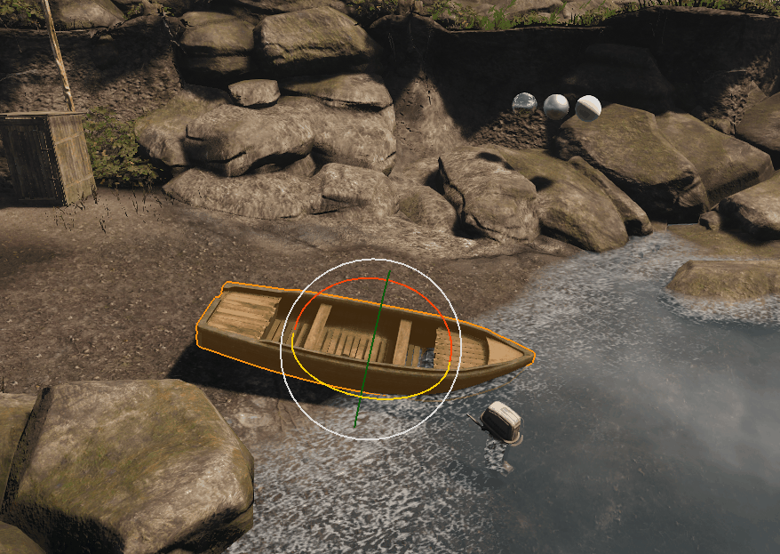
Режим масштабирования
Режим масштабирования позволяет выбирать объекты и масштабировать их в интерактивном режиме в окне видового экрана.
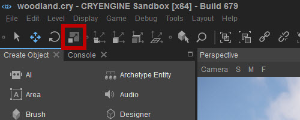
Режим масштабирования можно активировать, нажав кнопку на панели инструментов, используя сочетание клавиш '3', или через Редактировать -> Режим редактирования -> Масштаб.
В режиме масштабирования осевой гизмо имеет куб на конце каждой оси:
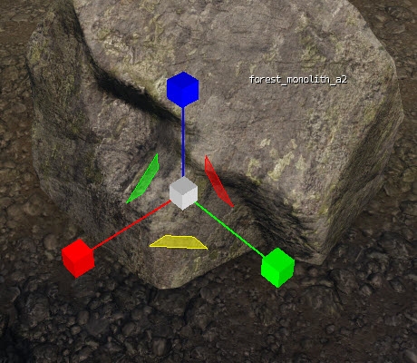
Подобно режиму перемещения, вы можете щелкнуть и перетащить кубы, чтобы масштабировать объект в одном направлении, или вы можете щелкнуть и перетащить одну из плоских штуковин квадратной формы между штуковинами осей, чтобы переместить масштаб одновременно по двум осям.
Наконец, вы можете щелкнуть и перетащить белый куб посередине, чтобы масштабировать объект одновременно по всем трем осям.
В режимах «Перемещение», «Поворот» и «Масштаб» вы также можете щелкнуть и перетащить сетку объекта, чтобы выполнить эти действия. Затем объект будет перемещаться, вращаться или масштабироваться вдоль осей, выбранных на панели инструментов «Ограничения осей» (см. ниже).
Ограничения оси
На панели инструментов есть четыре кнопки ограничения оси:
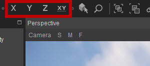
Панель инструментов «Ограничение оси» по умолчанию не отображается. Чтобы отобразить эту панель инструментов, щелкните правой кнопкой мыши в области панели инструментов и выберите Ограничения.
При перетаскивании объекта каждый значок ограничивает перемещение объекта только в выбранном вами направлении.
Щелчок по оси на гизмо оси также изменит ограничение.
Эта функция наиболее эффективна при использовании вместе с Заблокировать выбор (Уровень -> Выбор -> Заблокировать выбор). Затем объект можно перемещать, вращать или масштабировать, щелкнув и перетащив его в любое место видового экрана, а не только непосредственно на маркеры Gizmo.